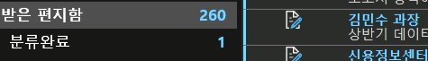
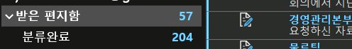
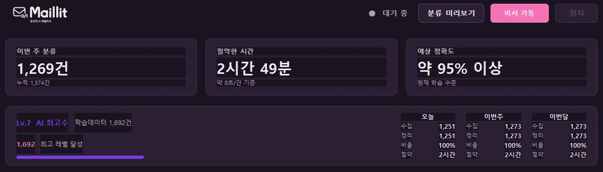
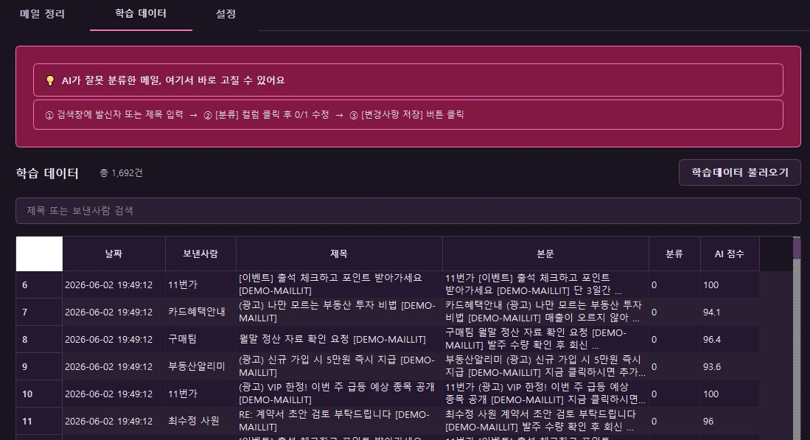
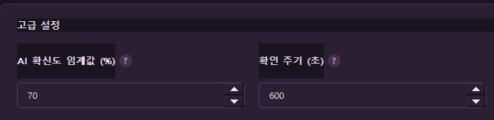
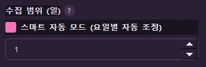

로컬
내 PC에서만 처리
받은편지함에 쌓이는 메일을 메일릿이 자동으로 분류합니다.
중요한 메일만 남기고, 나머지는 분류함에 모아드려요.
🔒
메일릿은 로컬 PC 안에서만 메일을 처리해 데이터가 외부로 나가지 않습니다. 모바일이 아닌 PC (Windows) 환경에서 다운로드 해주세요.
(아직 개인 개발 단계라 설치 시 보안 경고가 뜰 수 있어요)
하루에도 수십, 수백 통씩 메일을 받는 분이라면.
거래처·고객 메일이 하루 종일 쏟아지는 분
받은편지함에 안 읽은 메일이 수백 개 쌓인 분
중요한 메일만 남기고 나머진 치우고 싶은 분
아웃룩(Outlook)으로 업무를 보는 직장인
복잡한 규칙 설정 없이, 중요한지 아닌지만 알려주면 됩니다.
메일릿을 설치하고 아웃룩에 연결하면 준비 끝.
메일 몇 개를 '중요 / 덜 중요'로 표시하면 AI가 패턴을 배웁니다.
덜 중요한 메일은 따로 모으고, 중요한 메일만 받은편지함에 남깁니다.
메일릿이 분류하면 중요한 메일만 깔끔하게 남습니다.

받은편지함에 메일이 가득

중요한 메일만 남고 깔끔하게
주요 화면과 기능을 살펴보세요.
오늘·이번 주 분류한 메일, 절약한 시간을 한눈에 확인하세요. 메일릿이 얼마나 일했는지 보여줍니다.

메일을 '중요(1) / 덜 중요(0)'로 표시하며 AI를 학습시킵니다. 각 메일의 AI 점수도 확인할 수 있어요. 학습할수록 정확해집니다.

분류 기준(AI 점수)을 내 메일 패턴에 맞게 조정하세요. 적극적으로 분류할지, 안전하게 갈지 직접 정할 수 있습니다.

'비서 가동' 버튼을 켜면 메일릿이 백그라운드에서 자동으로 새 메일을 분류합니다. 일일이 누르지 않아도 알아서 받은편지함을 정리해 줍니다.
상황에 맞는 분류 버튼을 제공합니다. 월요일엔 주말 사이 쌓인 메일을 한 번에, 평일엔 전날부터 당일 아침까지 들어온 메일을 정리하도록 맞춰 분류할 수 있어요.

메일은 외부로 전송되지 않습니다. 모든 분류는 오직 내 컴퓨터 안에서만 이루어집니다.
메일을 삭제하지 않습니다. 분류된 메일은 따로 모아둘 뿐, 언제든 다시 볼 수 있습니다.
인터넷으로 나가는 데이터가 없습니다. 메일 내용은 PC를 벗어나지 않습니다.
메일릿을 더 똑똑하게 쓰는 방법입니다.
메일릿은 각자 학습시키는 만큼 정확도가 달라집니다. 처음엔 가끔 틀릴 수 있지만, 학습이 쌓이면 점점 똑똑해집니다.
설정의 AI 점수 기준(이 점수 이상이면 분류)을 본인 메일 패턴에 맞게 조정할 수 있어요. 처음엔 기본값(70)으로 시작하면 됩니다.
분류는 100%가 아닙니다. 분류된 메일은 삭제가 아니라 따로 보관되니, 가끔 분류함을 열어 놓친 메일이 없는지 점검해 주세요.
꼭 받아야 하는 발신자를 VIP로 등록하면, 그 메일은 절대 분류되지 않고 받은편지함에 남습니다.